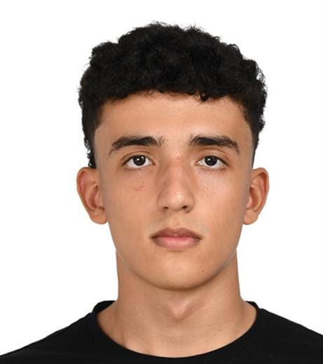

Acerca de mí
Conoce más sobre mi trayectoria y experiencia

¡Hola, soy Luis Angel Charry Porras!
Soy un desarrollador web apasionado por crear experiencias digitales atractivas y funcionales.
Con experiencia en HTML, CSS, Python y JavaScript, me especializo en construir sitios web responsivos que se adaptan a cualquier dispositivo.
Mi objetivo es combinar diseño estético con funcionalidad para crear productos digitales que superen las expectativas de los usuarios.
Educación
Ingeniería Informática, Universidad Autónoma de Occidente
Experiencia
Desarrollador Frontend, GOOGLE (2025-Presente)
Prácticas en Desarrollo Web, Microsoft (2021)
Mis intereses
Desarrollo Web
Creación de interfaces de usuario modernas y responsivas.
Diseño UX/UI
Diseño de experiencias de usuario centradas en la usabilidad.
Desarrollo Mobile
Creación de aplicaciones móviles intuitivas y funcionales.
Inteligencia Artificial
Exploración de algoritmos de IA y aplicaciones prácticas.